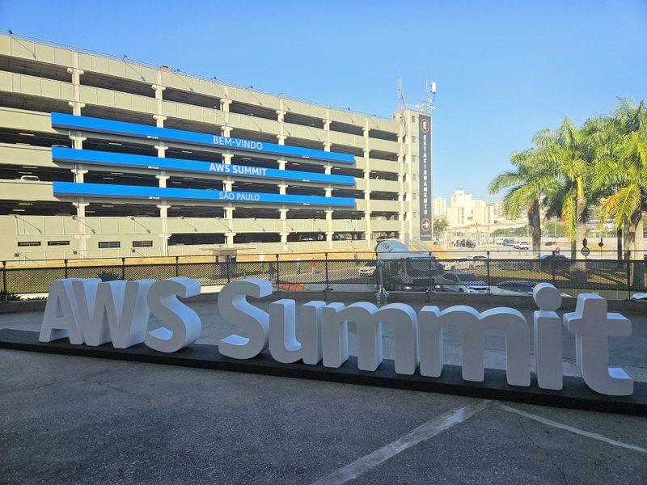
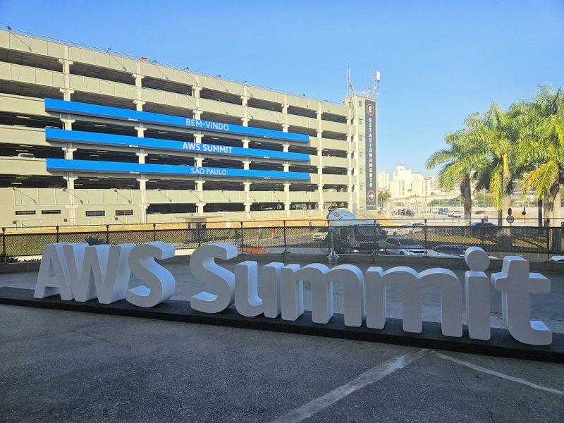
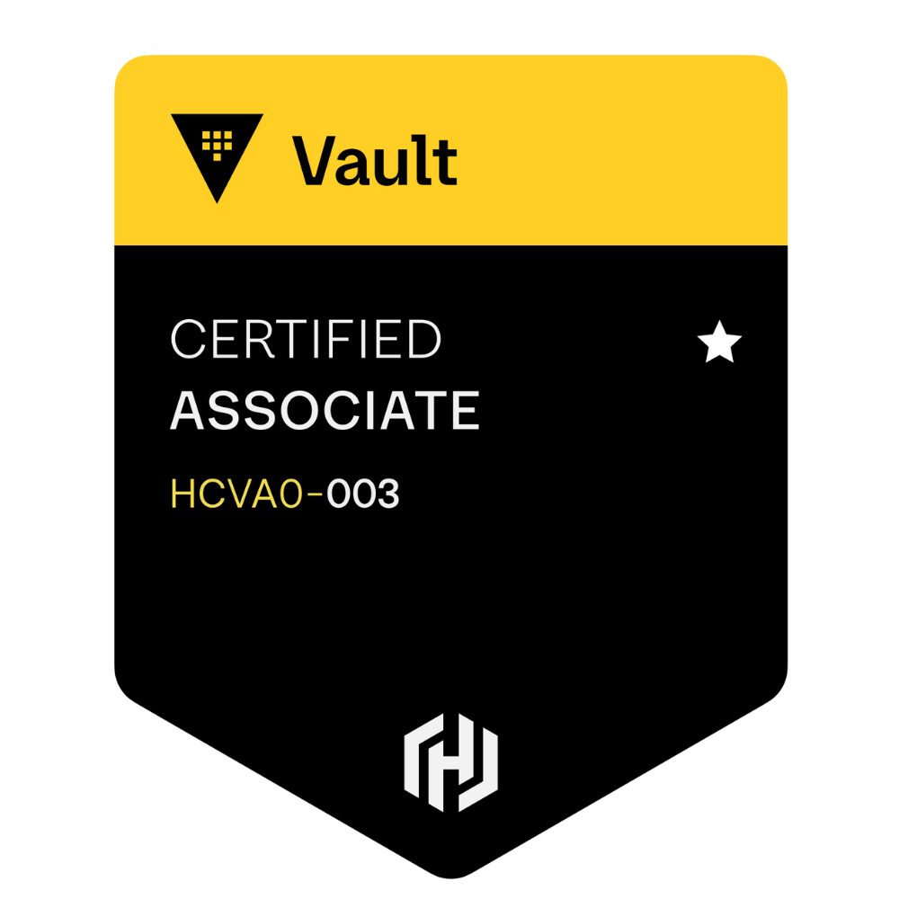
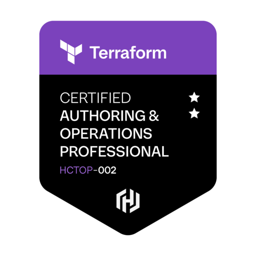
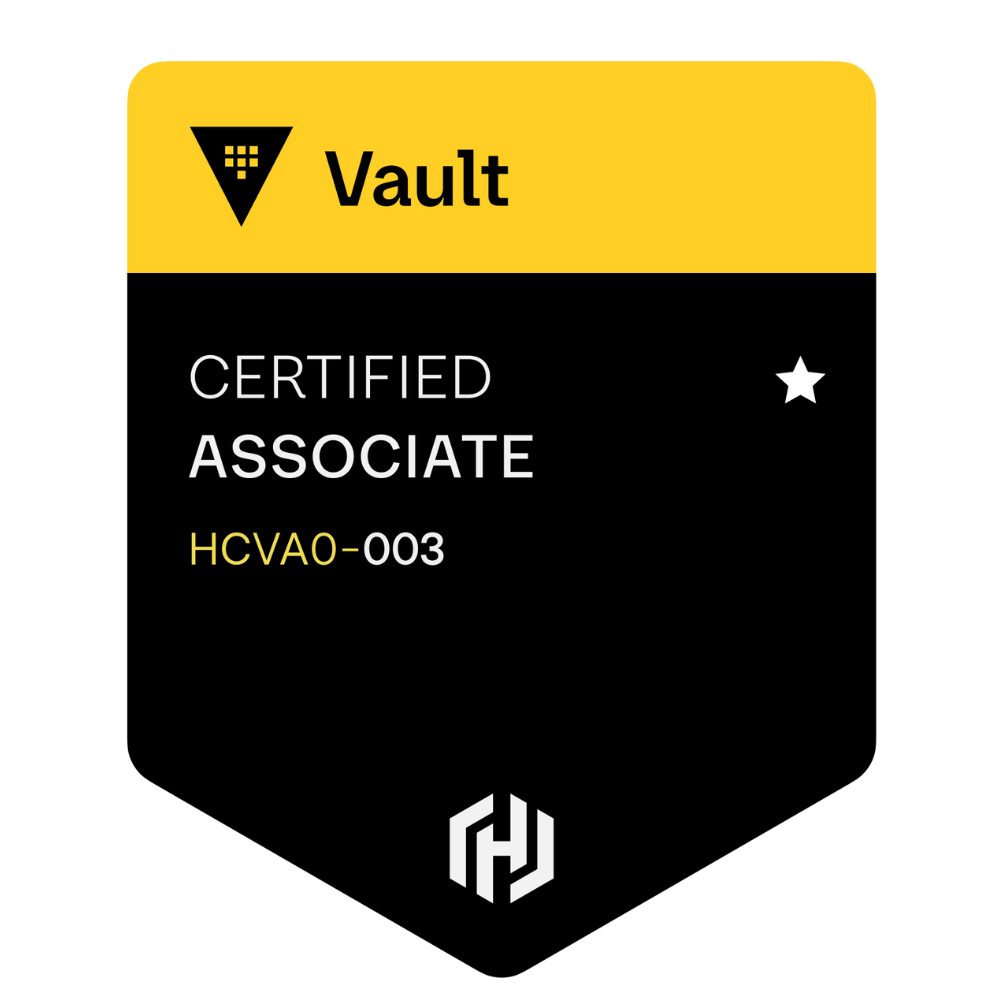
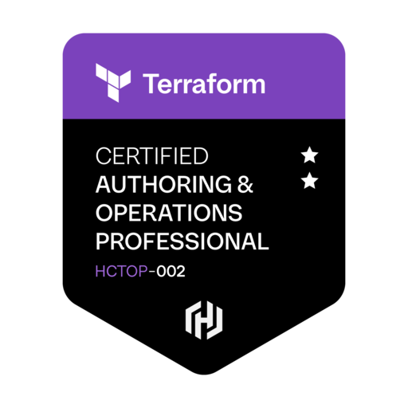
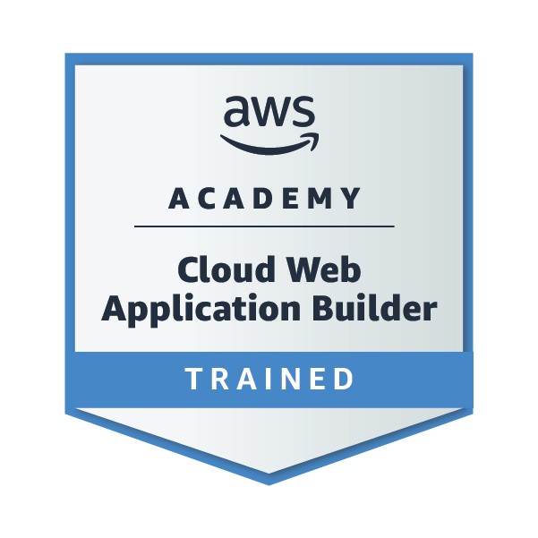
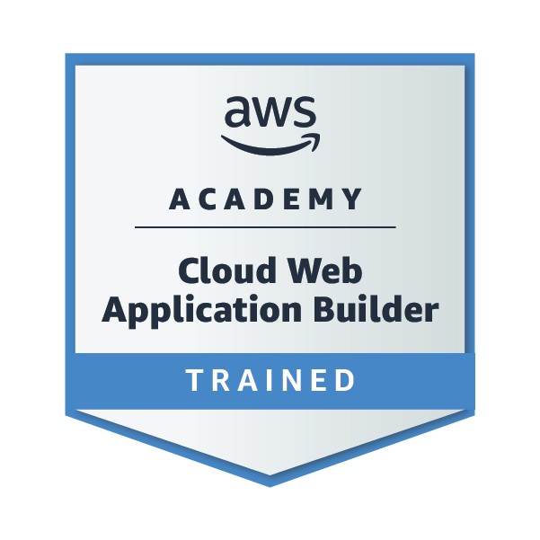

Wladyson Araújo
I'm

Sobre
Sou um profissional apaixonado por tecnologia e inovação, comprometido em transformar desafios complexos em soluções eficientes e impactantes. Com uma base sólida em desenvolvimento Java, Spring, análise de dados e suporte técnico, direciono minha carreira para áreas como Cloud Computing e Automação de Infraestrutura juntamente com desenvolvimento back-end, sempre com uma abordagem prática e analítica. Nos últimos anos, tenho aprofundado meus conhecimentos em Java, Terraform e AWS, focando na construção de ambientes escaláveis, resilientes e seguros, gerenciando serviços como EC2 (instâncias Linux/Windows, autoscaling e controle via IAM), S3 (armazenamento com versionamento e políticas), IAM (segregação de funções, MFA e roles), RDS (MySQL/PostgreSQL com snapshots, replicação e tuning), VPC (subnets, NAT Gateway, Internet Gateway e Security Groups), Lambda, EventBridge e CloudWatch (soluções serverless e monitoramento), Route 53 e CloudFront (DNS gerenciado e entrega de conteúdo), além de Terraform para Infraestrutura como Código, com provisionamento automatizado e versionamento via Git. Também me dedico a aprimorar conhecimentos em SQL, automações, manipulação de APIs, estruturas de dados, algoritmos e fundamentos de DevOps, com o objetivo de criar soluções modernas, seguras e escaláveis. Estou em constante evolução e aprendizado contínuo, buscando oportunidades que me desafiem a crescer profissionalmente e a contribuir para projetos com propósito e impacto real
- Cidade: Quixadá - CE, Brasil
Contatos
wladysonaraujo991@gmail.com
Links
LinkerdinGitHub
Experiência e Formação
Experiência e Formação em tecnologia, com foco em desenvolvimento de sistemas, dados, infraestrutura em nuvem e soluções práticas aplicadas no dia a dia.
Formação Academicas

Bacharel em
Sistemas de Informação

Tecnico em
Informática

Computação em
Infraestrutura de Nuvem (AWS)

Ciencia de
Dados e Inteligencia Artificial
Sistemas de Informação
Centro Universitário Catolica de Quixada, Quixada - CEJan 2024 - Dez 2027
Formação voltada para desenvolvimento de sistemas e soluções em tecnologia da informação. Foco em programação backend banco de dados, segurança da informação etc. Projetos com uso de Python Java, C#, PostgreSQL, C etc. Trabalhos integradores com metodologias ágeis como Scrum e Kanban, Estudos avançados em algoritmos estruturas de dados redes e engenharia de software, aplicações práticas em segurança digital, inteligência artificial e sistemas financeiros. Participação em projetos acadêmicos com foco em aplicações escaláveis e seguras, vivência em ambientes colaborativos e uso de versionamento com Git e GitHub
Ciencia de Dados e Inteligencia Artificial
Universidade Estadual do Ceara, Fortaleza - CEJan 2025 - Jan 2026
Formação intensiva com foco em Ciência de Dados e IA, promovida pelo MCTI com certificação emitida pela Universidade Estadual do Ceará (UECE). O curso abordou desde os fundamentos até aplicações avançadas em ciência de dados. Aprofundei conhecimentos e Desenvolvi projetos práticos integrando técnicas modernas aplicadas a problemas reais.
Computação em Infraestrutura de Nuvem
Escola da Nuvem, São Paulo - SPMai 2025 - Nov 2025
Formação técnica voltada para arquitetura de soluções na nuvem com serviços AWS. Trabalho com EC2, S3, RDS, IAM, Lambda, SNS, VPC e CloudFormation em ambientes reais. Aplicação de boas práticas de segurança e resiliência em infraestruturas escaláveis, criação de pipelines, CI/CD com GitHub Actions e CodePipeline para automação, provisionamento com Terraform e controle de ambiente por meio de infraestrutura como código, monitoramento com CloudWatch e integração de logs com VPC, Flow Logs e CloudTrail. Foco em práticas DevOps governança de nuvem e arquitetura orientada a eventos
Tecnico em Informática
EEP Clemente Olintho, Baturité - CEJan 2021 - Dez 2023
Formação técnica com foco em desenvolvimento de sistemas suporte e infraestrutura de TI. Criação de aplicações desktop e web com Java, C#, HTML, CSS e JavaScript. Introdução a banco de dados relacionais com MySQL e uso de queries e modelagem, aulas práticas de montagem manutenção formatação e configuração de computadores, conhecimentos em redes TCP IP cabeamento e configuração de roteadores e switches e uso de lógica de programação estruturas condicionais laços e orientação a objetos.
Certificações
- Gerenciamento de Ameaças Cibernéticas – Instituto Militar de Engenharia | 2025
- Oracle OCI Foundations - Oracle | 2025
- Oracle OCI DevOps Professional - Oracle | 2025
- Inglês Intermediário para Profissionais de TI – Dell Technologies | 2025
- Desenvolvimento Apex e Banco de Dados Oracle - Instituto Serzedello Corrêa | 2025
- Programação em Java Avançado – Instituto Federal do Rio Grande do Sul (IFRS) | 2024
- Administrador de Banco de Dados – Instituto Federal do Rio Grande do Sul (IFRS) | 2024
- Banco de Dados: Oracle PL/SQL – Instituto Federal do Rio Grande do Sul (IFRS) | 2024
- Power BI Discovery - Treinamento Microsoft - Comunidade Data Driver | 2024
- Segurança em Tecnologia da Informação - Bradesco | 2024
Badges Digitais


 





Treinamentos

 

Experiência Profissional
Cientista de Dados
Reis Marcas e PatentesSet - 2025 | Fortaleza - CE
- Atuo no desenvolvimento de um sistema de análise de dados e dashboard preditivo para uma empresa de consultoria de gestao empresarial em marcas e patentes, com foco em otimizar processos operacionais e identificar padrões comerciais.
- O projeto tem como objetivo otimizar fluxos operacionais e identificar padrões comerciais, utilizando pipelines automatizados de dados e modelos de machine learning.
- O projeto envolveu ETL de dados, modelagem preditiva (Regressão, XGBoost) e clusterização de clientes/processos para gerar insights sobre sazonalidade, taxa de conversão e gargalos internos.
- responsável por processar e estruturar dados comerciais e operacionais, construir pipelines de ETL, e desenvolver modelos preditivos de APIs RESTful para integrar o back-end aos dashboards interativos (Power BI / Streamlit / Dash).
- Automação e otimização de pipelines, garantindo consistência, escalabilidade e desempenho no tratamento de dados
- O sistema permite visualizar taxas de conversão, prazos médios, status de processos e clusters de clientes, oferecendo insights para decisões estratégicas baseadas em dados, assim, otimizando o tempo da equipe.
Desenvolvedor Back-end – Projeto DigitalTime
Out - 2025 | Quixada - CE
- Atuo no desenvolvimento de um aplicativo de controle de ponto transparente, uma solução que elimina a desconfiança entre funcionários e RH em relação aos registros de horários. O sistema foi estruturado com armazenamento seguro de dados, permitindo consultas e exportação de relatórios de forma rápida e confiável.
- Implementei funcionalidades que garantem a integridade e autenticidade dos registros, aplicando boas práticas de programação, princípios de orientação a objetos e técnicas de proteção contra alterações indevidas nos dados. Desenvolvi interfaces intuitivas e recursos de visualização de histórico, proporcionando maior transparência e eficiência nos processos internos.
- Além disso, contribui para a documentação detalhada do sistema, compartilhamento de boas práticas de versionamento e testes automatizados, facilitando a manutenção futura e o uso colaborativo do aplicativo. O projeto também serviu como base para a criação de soluções internas que apoiam a melhoria de processos no ambiente corporativo.
Desenvolvedor Back-end – Projeto Ecotainer
Laboratorio de Inovação Digital em Tecnologia e Sistemas de InformaçãoAgost - 2025 | Quixada - CE
- Atuo no desenvolvimento de sistemas back-end, criando e integrando APIs para conectar diferentes aplicações e permitir a troca de dados de forma rápida e segura.
- Desenvolvi funcionalidades utilizando linguagens como Python, Java, Node.js, JavaScript, PHP, C++ e C#, aplicando conceitos de orientação a objetos juntamente com metodologias de desenvolvimento web, boas práticas de programação e arquitetura limpa. Trabalhei na implementação de autenticação garantindo a segurança no acesso aos sistemas, além de aplicar técnicas de prevenção contra SQL Injection e outras vulnerabilidades
- No laboratório também são desenvolvidas aplicações e soluções voltadas para apoiar o IES na melhoria de processos e na resolução de problemas tecnológicos.
- Contribuí também para o compartilhamento de conhecimento entre os membros da equipe, promovendo boas práticas de versionamento, testes automatizados e documentação clara dos sistemas.
Analista de Sistemas – Projeto Suprema ADMIN
Jan - 2025 - Out - 2025 | Quixada - CE
- Desenvolvimento de um sistema automatizado voltado à gestão de dados na área da saúde relacionado a clinicas. Criado para tratamento e processamento de dados com alta velocidade, ele interpreta arquivos totalmente desestruturados como PDFs, Planilhas, Fichas de atendimento, laudos medicos, formulários manuais entre outros, ele organiza as informações e gera planilhas, relatorios detalhados, com hora de atendimento, observações precisa, dados no ponto de serem enviados para analise e validação de informações estruturadas automaticamente, sem necessidade de preenchimento manual com alertas e avisos para falta de informaçoes, aumentando ainda mais a atençao dos funcionarios, para nao enviar nada errado.
- O sistema vai além da organização: ele realiza a digitação automática dos dados em outros sistemas oficiais, reconhecendo os dados das planilhas e preenchendo campos dos outros sistemas com precisão automaticamente, Em casos de inconsistência, o sistema emite alertas, evita o envio do dados incorretos e destaca a célula em vermelho, seguindo para o próximo item automaticamente. Essa automação reduziu o tempo de digitação em até 50 dias, substituindo o trabalho de uma equipe de 6 pessoas, liberando a equipe administrativa para outras atividades essenciais.
- Também integrei o sistema ao N8N, utilizando containers Docker, para envio automático de relatórios de produção às secretarias municipais, orgaos estaduais e federais de saúde. A automação identifica as planilhas e relatórios correspondentes a cada órgão, extrai as informações relevantes e realiza o envio conforme os prazos e formatos exigidos, eliminando a necessidade de envio manual por e-mail. Isso garantiu agilidade, padronização e total conformidade regulatória, poupando tempo da equipe e evitando atrasos na prestação de contas.
- O sistema registrou mais de 12.526 procedimentos digitados automaticamente em apenas um mês, processo que antes levaria em média de 45 a 50 dias úteis em regime manual, considerando o volume e a complexidade das tarefas. Hoje, toda essa carga é executada sozinho
- Na próxima atualização, o Suprema ADMIN incluirá funções de busca ativa de novos pacientes, com integração a plataformas externas, redes de saúde e canais digitais. Essa nova funcionalidade tem como objetivo aumentar significativamente o fluxo de pacientes e ampliar o alcance da clínica.
- Nos testes preliminares realizados, a funcionalidade demonstrou um potencial de crescimento de até 30% na captação de novos pacientes, por meio de automações de triagem e comunicação direcionada.
Analista de Dados
Atenção Medica OftalmológicaAbr - 2024 - Jul - 2025
- Atuei na área administrativa com foco em gestão e análise de dados na saúde com uso de python para automatizar tarefas e tratamento de informações
- Organizei registros de pacientes que antes eram feitos em folhas de papel que era uma problemática, pois era perdido bastante tempo preenchendo com as documetações das pessoas, assim foi transferido para planilhas eletrônicas e sistemas, agilizando a gestão e tratamento dos dados para dashboards em BI afim de termos controle de quantos pacientes passaram pelo estabelecimento e reduzindo erros.
- Trabalhei diariamente com grandes volumes de dados, utilizando Excel, Power BI e outras ferramentas para tratamento, cruzamento e análise.
- Criei planilhas automatizadas com fórmulas, validações, filtros, tabelas dinâmicas e macros.
- Desenvolvi dashboards interativos no Power BI para monitoramento de indicadores e apoio à tomada de decisões estratégicas.
- Automatizei processos manuais, melhorando a organização das informações e contribuindo para a segurança e integridade dos dados.
- Realizei limpeza e tratamento de dados, removendo duplicatas e padronizando formatos com o uso de Python.
- Implementei conectores no Power BI para integração com diversas fontes de dados e automatizei tarefas repetitivas de carregamento com Power Query.
Tecnico em TI
Atenção Medica OftalmológicaJul 2023 - Dez 2023
- Atuei na área de suporte técnico, prestando atendimento presencial aos usuários, com foco na agilidade, eficiência e resolução precisa dos problemas.
- Realizava manutenções preventivas e corretivas em hardware, identificando falhas recorrentes de desempenho causadas por módulos de memória RAM defeituosos. Após diagnóstico, executava a substituição da memória e a limpeza completa do equipamento, finalizando com a reinstalação e configuração dos softwares necessários para garantir o pleno funcionamento do sistema.
- Instalava, configurava e atualizava sistemas operacionais (Windows/Linux) e aplicativos corporativos.
- Responsável pela formatação de máquinas e diagnóstico de falhas.
- Prestava suporte em redes locais e conectividade.
- Contribuí para a estabilidade dos sistemas e continuidade dos serviços, criando um ambiente mais seguro e produtivo para os colaboradores.
- Propus melhorias, organizei rotinas técnicas assim diminuindo atividade repetitivas e promovi boas práticas no uso dos recursos de TI.
Competência Comportamental
- Aprendizado Contínuo.
- Resolução de Problemas.
- Trabalho em Equipe.
- Proatividade Adaptação e Resiliência.
- Pensamento Crítico.
- Gestão do Tempo Orientação para Resultados.
Idiomas
- Inglês– Intermediário para leitura
- Espanhol– Intermediário para leitura e escrita
Portifólio
Tecnologias e metodos utilizadas em meus trabalhos para produtividade e desenvolvimento de ambientes escalaveis.


{kind=link}
{kind=link}
{kind=link}
{kind=link}
{kind=link}
{kind=link}
{kind=link}
{kind=link}
{kind=link}
{kind=link}
{kind=link}
{kind=link}
{kind=link}
{kind=link}
{kind=link}
{kind=link}
{kind=link}
{kind=link}
{kind=link}
{kind=link}
{kind=link}
{kind=link}
{kind=link}
{kind=link}
{kind=link}
{kind=link}
{kind=link}
{kind=link}
{kind=link}
{kind=link}
{kind=link}
{kind=link}
{kind=link}
{kind=link}
{kind=link}
{kind=link}
Competência Técnica


Contribuição a Comunidade
Cloud Computing e Cloud Architecture
- Desenvolvimento de repositório com o propósito de documentar e organizar todos os laboratórios práticos realizados ao longo da minha formação em Computação em Nuvem com foco na AWS. Ao todo, o repositório reúne ( 70 laboratórios ), sendo 40 laboratórios oficiais executados durante a formação, acompanhados de 30 laboratórios extras desenvolvidos por mim para aprofundar o aprendizado técnico e aplicar cenários mais avançados. Os conteúdos estão distribuídos em três níveis de complexidade — 10 básicos, 10 intermediários e 10 avançados — além de uma seção exclusiva com labs profissionais voltados para quem deseja ir além dos fundamentos, simulando ambientes reais e exigentes de produção em nuvem. Todos os laboratórios foram cuidadosamente documentados, contendo descrições detalhadas, prints reais dos ambientes, comandos utilizados, validações, estruturas de rede, políticas de segurança e simulações práticas baseadas em casos do mundo real. O objetivo é oferecer uma base sólida não apenas para estudo, mas também para aplicação profissional, permitindo que qualquer pessoa que acesse este repositório possa entender, reproduzir e adaptar os ambientes apresentados. Os temas abordados vão desde a criação e gestão de recursos fundamentais na AWS (como IAM, EC2, S3, RDS, Lambda, VPC, CloudWatch, entre outros), até a aplicação de práticas modernas da engenharia de nuvem, incluindo Infraestrutura como Código com Terraform, conteneirização com Docker, orquestração com Kubernetes, e automação com foco em DevOps e pipelines CI/CD. O repositório também inclui tópicos sobre observabilidade, segurança na nuvem, escalabilidade, além da integração com serviços de inteligência artificial da AWS, oferecendo uma experiência completa de aprendizado prático voltada para o mundo real. Este material reflete meu compromisso com a excelência técnica, a organização do conhecimento e o desenvolvimento de soluções escaláveis, seguras e modernas em ambientes de nuvem.
Data Science & Artificial Intelligence
- Desenvolvimento de repositório com o propósito de documentar e organizar todos os laboratórios práticos realizados ao longo da minha formação e estudos em Ciência de Dados e Inteligência Artificial. Todos os laboratórios foram cuidadosamente documentados, contendo descrições detalhadas, códigos-fonte comentados, datasets utilizados, métricas de avaliação, prints e visualizações gráficas, pipelines de processamento de dados, tuning de hiperparâmetros, e simulações práticas baseadas em problemas reais do mercado. Os temas abordados são vastos, desde pré-processamento, algoritmos, programação com python, Fundamentos da estatistica, Fundamentos de Banco de dados, Estrutura de dados, Visualizaçao de dados, Mineração de dados, Modelagem, Programação Aplicada a Inteligencia Artificial, Processamento Textual, Aprendizado Supervisionado e Não Supervisionado, Deep Learning e análise exploratória de dados, engenharia de atributos, engenharia de Prompt até a construção, treinamento, validação e implantação de modelos de IA. Também inclui conteúdos sobre processamento de linguagem natural (NLP), visão computacional, aprendizado por reforço, e integração de modelos com APIs e aplicações web. O material também cobre práticas essenciais de avaliação e validação de modelos, seleção de algoritmos, ajuste fino (hyperparameter tuning), explicabilidade de modelos (Explainable AI), e integração com aplicações reais para demonstração de resultados. Além disso, há conteúdos sobre uso de frameworks como TensorFlow, PyTorch, Scikit-learn e Hugging Face, bem como técnicas para otimização e implantação de modelos em diferentes contextos, garantindo desempenho e eficiência. Alguns treinamentos de modelos, devido à sua complexidade e tamanho, exigem hardware especializado para execução eficiente, como placas de vídeo (GPUs) com alto poder de processamento. No entanto, também são apresentadas alternativas para execução em ambientes gratuitos ou de baixo custo, como Google Colab, Kaggle Kernels e plataformas de cloud computing com créditos acadêmicos.
Java Development
- Repositório desenvolvido com o objetivo de documentar e organizar todos os laboratórios práticos realizados em Java abordando desde os fundamentos da linguagem até projetos avançados cada laboratório contém código-fonte comentado descrição detalhada objetivo e funcionamento instruções de compilação e execução resultados de exemplo e testes automatizados os temas abordados incluem sintaxe básica variáveis operadores estruturas de controle programação orientada a objetos com classes herança polimorfismo interfaces e classes abstratas estruturas de dados como listas filas pilhas mapas e árvores manipulação de arquivos e serialização tratamento de exceções generics uso de streams e API de collections programação concorrente e multithreading integração com bancos de dados via JDBC desenvolvimento web com Servlets JSP e frameworks como Spring MVC criação de APIs REST e SOAP microserviços com Spring Boot Spring Cloud e comunicação entre serviços com REST e mensageria padrões de projeto arquitetura em camadas e arquitetura hexagonal segurança com autenticação e autorização JWT OAuth2 e integração com Spring Security aplicações desktop com JavaFX ou Swing aplicação de design patterns como Singleton Factory Strategy Observer Adapter otimização de código e boas práticas de desempenho implementação de testes unitários e de integração com JUnit e Mockito configuração de CI/CD com GitHub Actions deploy de aplicações Java em servidores Tomcat WildFly e containers Docker utilização de Kubernetes para orquestração integração contínua com bancos relacionais e NoSQL consumo de APIs externas criação de bibliotecas e pacotes reutilizáveis e implementação de monitoramento e métricas para aplicações corporativas garantindo portabilidade escalabilidade segurança e reprodutibilidade
N-eight-N (N8N) Automação Intelligence a base de NÓS
- Repositório desenvolvido para criar fluxos automatizados de tarefas e integração entre sistemas e serviços, otimizando processos repetitivos e aumentando a produtividade. O projeto utiliza a plataforma N8N para conectar APIs, bancos de dados e serviços em nuvem, permitindo workflows inteligentes acionados automaticamente ou manualmente. Inclui automação de processos administrativos, envio de e-mails, notificações, atualizações de sistemas, integração entre ferramentas, registro e monitoramento de atividades, tratamento de dados, verificação de consistência e personalização de fluxos conforme necessidade. Permite integração com ferramentas de BI, sistemas financeiros, CRMs e plataformas de comunicação, facilitando a centralização de informações e análise de dados em tempo real. O projeto foi containerizado com Docker, permitindo fácil instalação, configuração e execução em qualquer ambiente sem dependências complexas. A manutenção é facilitada pela estrutura modular, documentação detalhada e versionamento via Git, permitindo adicionar novos workflows, atualizar integrações e corrigir problemas rapidamente. Serve como base para desenvolver soluções corporativas inteligentes, permitindo que empresas implementem automações complexas, escaláveis e seguras sem criar tudo do zero.
Pesquisa e Artigo Científico
Pesquisa e Estudo em Visão Computacional e Processamento de Linguagem Natural com Inteligência Artificial - ML-SI
Montagem, Arquitetura e Prototipagem com Arduino e Linguagem C/C++

Pesquisa e Estudo em Sistemas de Informação e Gestão de Tecnologia | GPSIGT.
Pesquisa e Estudo em Sistemas e Soluções Tecnológicas para Educação e Interdisciplinaridade | SSTEI.
Extras Adicionais
Formação em Cloud Computing AWS - Escola da Nuvem | Mai/2025 - Atual
-
Sistema de venda e controle de ingressos digitais com validação de identidade por reconhecimento facial para o Santa Cruz Futebol Clube, atendendo à Lei Geral do Esporte (14.597/2023) e promovendo maior segurança, agilidade e conforto aos torcedores. O projeto integra tecnologias avançadas da AWS, como Amazon Rekognition para reconhecimento facial, DynamoDB para armazenamento seguro de dados, API Gateway e AWS Lambda para processamento serverless, garantindo alta escalabilidade e disponibilidade superior a 99% em dias de jogos. Com foco na redução de fraudes, eliminação do cambismo e agilidade no acesso, o sistema oferece autenticação biométrica rápida (menos de 2 segundos), notificações em tempo real, além de dashboards para gestão e auditoria dos acessos. Tudo isso com respeito total à LGPD, assegurando criptografia dos dados e controle rigoroso de permissões. Utilizei metodologia ágil Scrum para conduzir o desenvolvimento, implementando infraestrutura como código com Terraform, conteinerização com Docker e pipelines CI/CD para entrega contínua e segura. Todo cenario foi pensado exclusivamente para agilizar toda a multidão na chegada dos estadios, assim causando tumulto, longas espera de tempo para entrada da torcida.
Desenvolvimento com Java - Rocketseat | Fev/2025 - Jun/2025
- Desenvolvimento de aplicação serverless com Java e Maven para redirecionamento de urls. Realizado a integração com AWS S3 para criação e gerenciamento de buckets, exposição de endpoints via API Gateway, uso de AWS Lambda para processamento serverless, e manipulação de dados em JSON com Jackson e desenvolvimento de aplicação back-end Java com Maven utilizando SpringBoot e API Rest. Estruturação do projeto desde a modelagem dos dados até a implementação das funcionalidades principais. Integração com o banco de dados MySQL utilizando JPA e JDBC. Utilização de records para manipulação dos dados. Implementação de um sistema de indicações com ranking dos usuários que mais convidaram pessoas para o evento.
Desenvolvimeto com Java - Projeto Pessoal | Jan/2025 - Atual
- Game com cenário roguelike em Java utilizando Maven para gerenciamento de dependências e build, com geração procedural de mapas, inimigos e eventos, arquitetura baseada no padrão MVC, sistema de combate por turnos com atributos como força, agilidade e sorte, persistência de dados em arquivos JSON, geração de mapas com algoritmos como random walk, controle de entrada via teclado, interface gráfica com Java 2D, sistema de salvamento automático e logs de sessão, testes automatizados com JUnit, empacotamento e versionamento do projeto facilitado pelo Maven, com foco em escalabilidade e manutenibilidade do código, como java depende muito de memoria ram da maquina optei por transformar parte do codigo em C juntamente com C# para uma configuração grafica melhorada, o game ainda esta em desenvolvimento e testes sem data definida de finalização, pois seram feitas ainda mais modificações para um cenários mais rico e com interatividade com o jagador, proporcionando uma experiência disferenciada.
NLW Pocket: Mobile - Kotlin - Curso Rocketseat | Dez/2024 - Dez/2024
- Desenvolvimento de uma aplicação mobile Android nativo com Kotlin, Android Studio, MVI + Clean, Architecture,Jetpack Compose, ViewModel e Lifecycle, Navigation, Google Maps API, Flow e Coroutines, Ktor, Kotlinx, Serialization, Coil, Gradle
NLW Pocket: Javascript - Curso Rocketseat | Nov/2024 - Nov/2024
- Desenvolvimento de uma aplicação back-end em Node.js, aplicação dos conceitos de API REST, utilizando TypeScript, Fastify como framework, integração do DrizzleORM + PostgreSQL, Docker e Zod para validação de dados. Desenvolvimento de uma aplicação front-end em ReactJS, aplicação dos conceitos de Propriedades, Estados e Componentes,tipagem com Typescript,tooling com Vite, interface responsiva com TailwindCSS, consumo de API Node.js, gerenciamento de dados assíncronos com TanStack Query.
Desenvolvimento PHP – Curso Rocketseat | Out/2024 – Out/2024
- Desenvolvimento de uma aplicação em PHP com Laravel seguindo a arquitetura MVC, conceitos e criação de controllers, models e views para estruturar a nossa aplicação, SQLite, uso de migrations, criação de dados falsos com as factories e seeders pra popular o banco, validações e criação de interfaces dinâmicas e reativas com o Livewire.
IA na prática - Rocketseat | Agost/2024 – Agost/2024
- Desenvolvimento de aplicação Python, integração com modelo GPT da OpenAI, uso do framework CrewAI, criação de agente para consumo de dados do duckduckgo, criação de frontend com framework StreamLit, deploy via StreamLit cloud.
NLW Journey - Java da Rocketseat | Jul/2024 – Jul/2024
- Desenvolvimento de uma aplicação back-end em Java com Spring boot utilizando ferramentas modernas para garantir eficiência e escalabilidade. Neste projeto foi utilizado h2 database,JPA, migrations via Flyway, uso de records para transferências de dados, Lombok.